Measurement & ideas
We visit your home, take the required measurements and listen to how you want to live in each space. We discuss your needs, style, budget range and practical ideas.
You receive: a clear starting brief for the design.
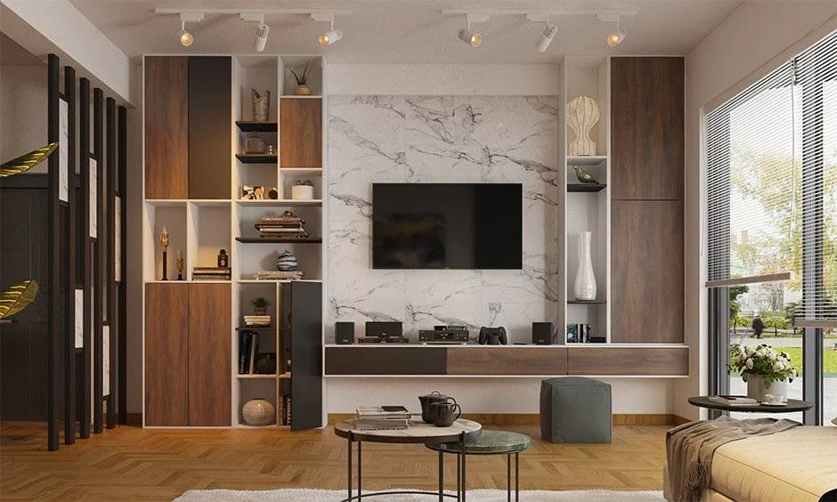
TURNKEY PREMIUM LUXURY RESIDENTIAL INTERIOR SOLUTIONS
Thoughtfully designed for your life.
Crafted with care, from idea to handover.
Slow mornings. Big family dinners. Your favourite corner at the end of the day. We begin with the things that make a home yours — then explore the layout, textures and details that bring it all together.
Meet your next chapter ↗02 / SPACES & INSPIRATION
A visual collection of rooms and details.
Save an idea in your mind. Make it your own.
Thoughtful spaces.
Good energy.
More you.
FEATURED RESIDENCE / STAGE 05 — HANDOVER
Oragadam–Padappai, Tamil Nadu
Original photographs · One featured duplex villa
Step inside a home at handover. Textured glass, full-height storage and carefully placed lighting come together in a residential interior built for everyday use.
This featured house is within a gated community of approximately 150–225 duplex villas near Oragadam and Padappai. The photographs show the work in this one residence.
Textured glass wardrobe doors with warm internal lighting and a wood-toned display niche.
Full-height wardrobes, mirrored doors and ceiling light channels in the dressing passage.
Illuminated glass storage beside the adjoining bedroom.
Textured glass and marble-effect cabinetry photographed with the cabinet lighting off.
Full-height marble-effect wardrobes with black handles, overhead storage and a dressing mirror.
Open wardrobe doors and drawers reveal shelves, a hanging rail and integrated lighting.
Dressing passage with mirrored surfaces and fitted wardrobes, photographed on site.
Closed wardrobe elevation with stone-effect fronts, a dressing niche and overhead cupboards.
MORE FROM THIS RESIDENCE
Further site photographs and a short walkthrough from the Stage 5 collection.
A wood-framed media wall with pale stone-effect panels and a softly lit ceiling.
Geometric ceiling panels and warm integrated lights photographed inside the residence.
Blue-toned kitchen cabinetry, worktop and under-cabinet lighting in the same residence.
Fitted storage, mirror and linear lighting seen along the residential passage.
SITE VIDEO / ORIGINAL FOOTAGE
Walk through the storage and finishing details in footage recorded at the residence.
Original site photographs supplied by the studio. Natural lighting, reflections and visible finishing details are retained. These images have not been AI-generated or digitally restaged.
Plan your villa interiors ↗BEHIND THE BUILD / SITE PHOTOGRAPHS
A closer look at interiors taking shape.
From the first fittings to the finishing touches.
Corner kitchen cabinetry with warm lighting and protective films still in place.
Stone-effect cabinet fronts above open storage during installation.
Integrated vertical lighting within a dark-framed storage unit.
Pull-out kitchen baskets and base cabinetry during fitting.
Curved ceiling forms and recessed channels before the final light fittings.
Full-height open shelving and wardrobe framing during installation.
Site-progress photographs. Protective films, tools and unfinished surfaces are part of the work shown.
Explore all the photographs ↗REAL SITE PHOTOGRAPHS / THE DETAILS OF MAKING
Original photographs supplied by the studio, showing site progress and residential interior details. These are real site images, not AI-generated images.
GreatSpace Interiors Studio offers turnkey premium luxury residential interior solutions, bringing together planning, design, sourcing, implementation and handover.
Every design can be customised to your preferences, space and daily life. We bring the artist within us to every detail, with sincere craftsmanship and a shared commitment to your satisfaction.
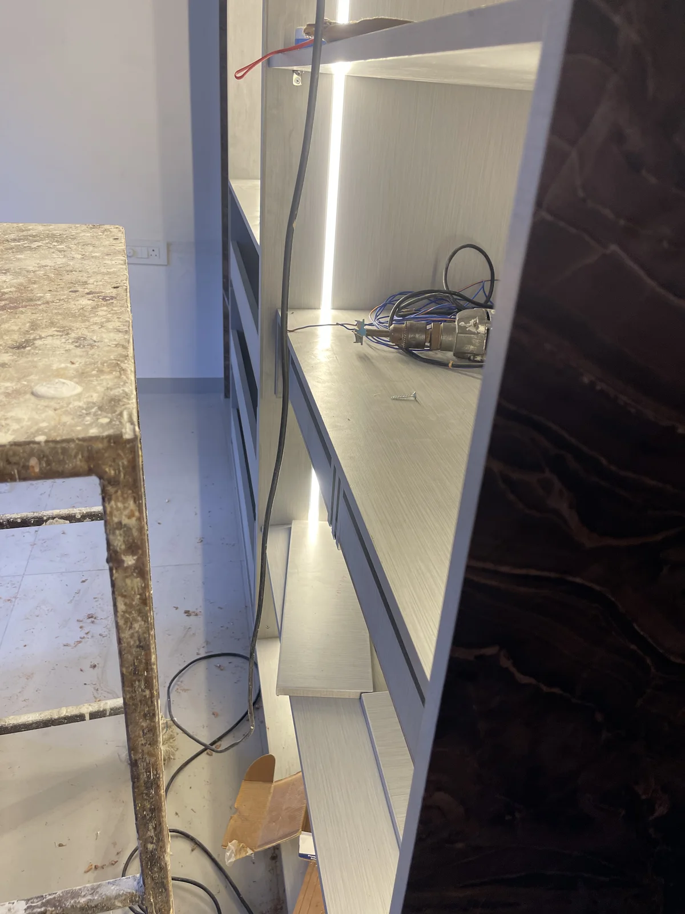
VIEW PHOTO ↗Shelving and lighting being fitted on site.
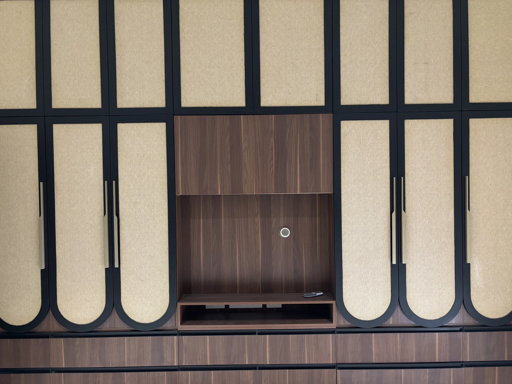
VIEW PHOTO ↗A fitted media wall with contrasting finishes and display space.
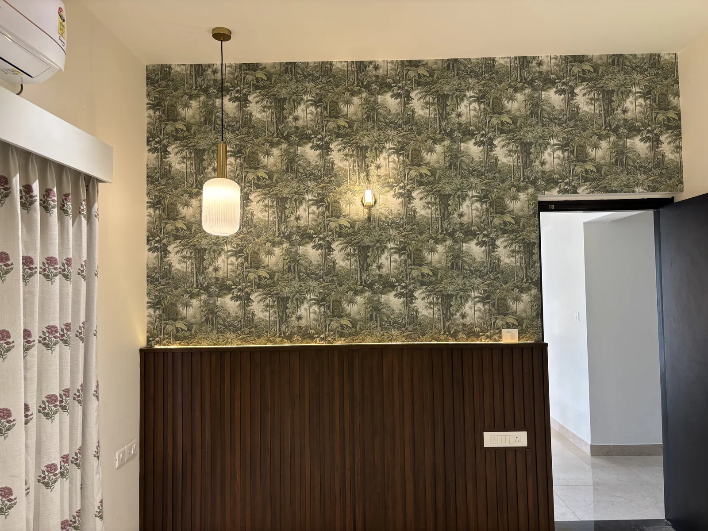
VIEW PHOTO ↗A feature wall with textured finishes and pendant lighting.
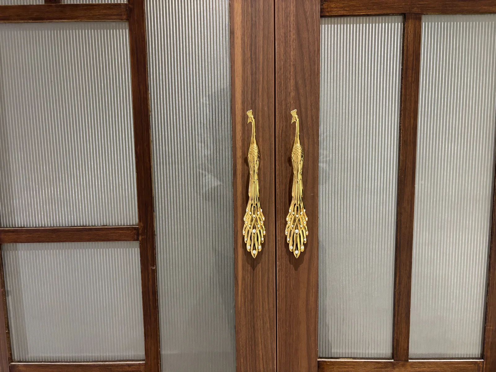
VIEW PHOTO ↗Textured panels, timber tones and decorative hardware.
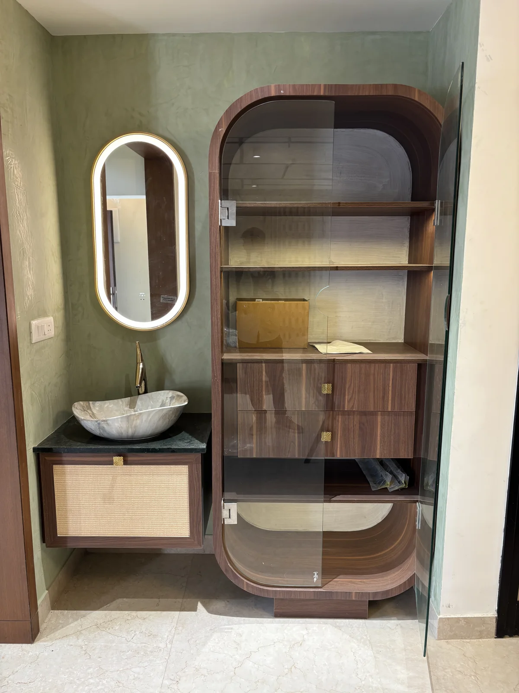
VIEW PHOTO ↗A mirror, basin and display unit brought together with warmth.
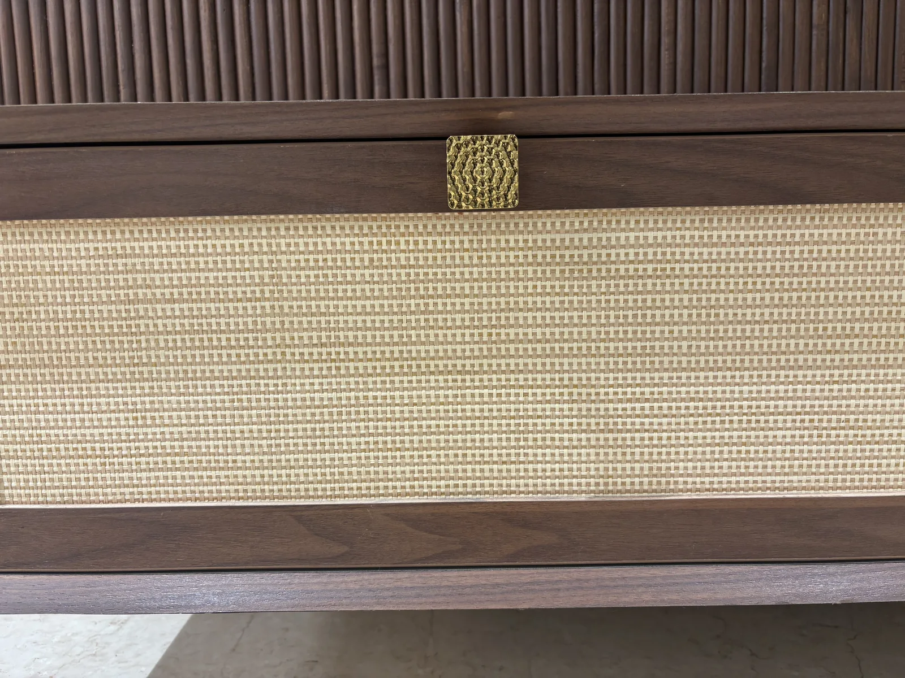
VIEW PHOTO ↗Timber textures and woven surfaces meet in a fitted detail.
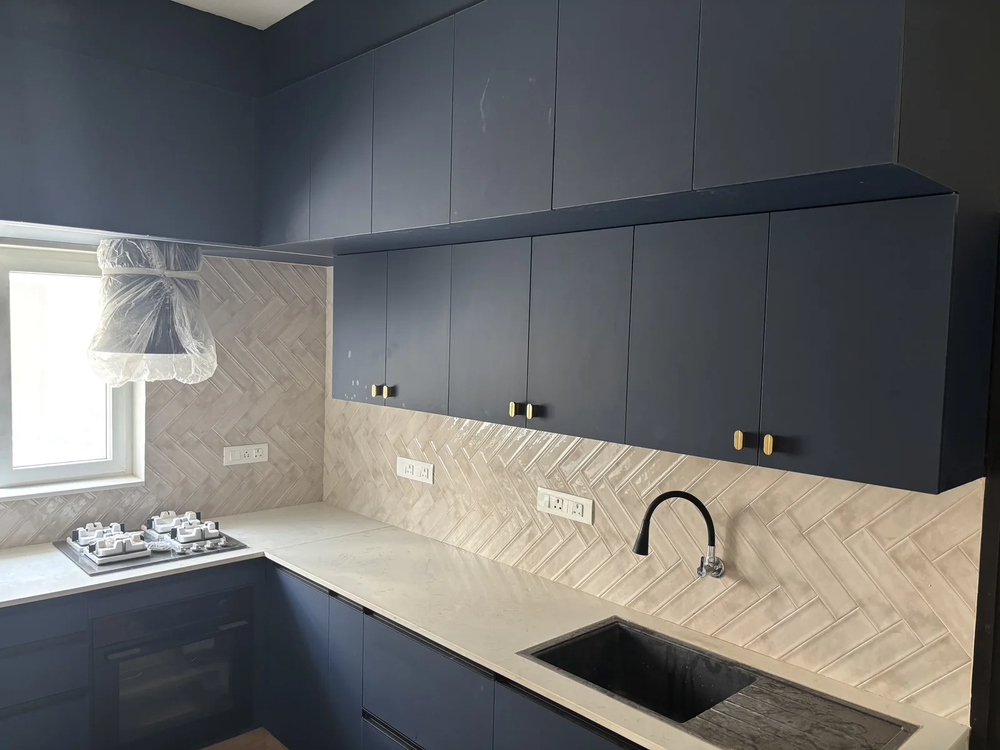
VIEW PHOTO ↗Deep-toned cabinetry and a light worktop in a residential kitchen.
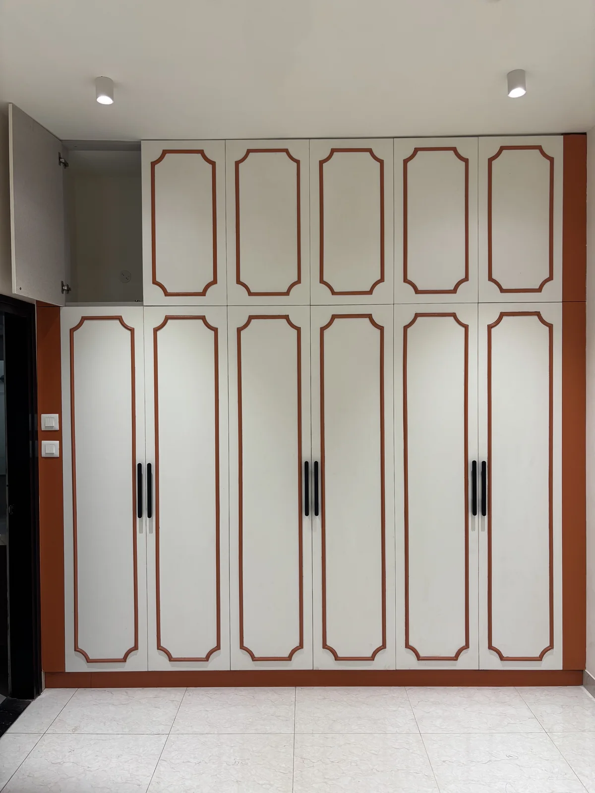
VIEW PHOTO ↗Full-height wardrobes with detailed panelled shutters.
These are original site photographs. The installation image shows work in progress; other photographs show residential details. Select an image to view it larger. Your final design, materials and scope are customised and agreed with you.
Discuss your home with us ↗03 / MAKE IT YOURS
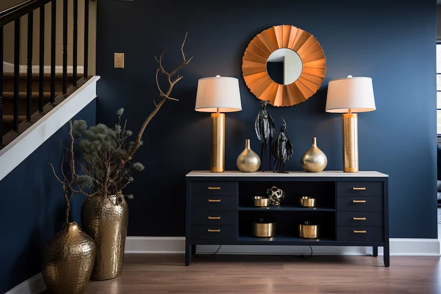
From a single room to a fresh start.
Let’s find the right scope for your space.
Living rooms, bedrooms and everything in between. Start with your daily routine, the furniture you love and the way you want to feel at home.
Discuss your home ↗Storage that makes sense. Room to prepare, cook and share. Tell us about your cooking habits and the appliances you want to keep.
Plan your kitchen ↗A place for everyday essentials and the things you treasure. Explore a storage plan around your room and what you actually own.
Make space ↗Give a familiar place a fresh perspective. Share what works, what needs to change and whether you will be living at home during the work.
Reimagine your space ↗Spaces that support the people using them. Discuss your team, customer experience and the practical needs of your business.
Talk business ↗The finishing touches that pull a room together. Explore furniture, light and detail as part of your overall interior plan.
Explore the details ↗
04 / THE GREATSPACE INTERIORS STUDIO PROCESS
You know what happens next, what you need to approve and when the work begins.
We visit your home, take the required measurements and listen to how you want to live in each space. We discuss your needs, style, budget range and practical ideas.
You receive: a clear starting brief for the design.
We present the proposed layout, look, materials and key details. You review them, ask questions and request changes. The design moves ahead after your approval.
Your decision: approve the agreed design and scope.
We confirm the materials, inclusions, cost and timeline together. Procurement starts only after both you and GreatSpace Interiors Studio agree on the scope and commercial terms.
Before ordering: both sides agree on the details.
Our team carries out the on-site work: fabrication, fitting, finishing and coordination. We track progress and check the workmanship as the design becomes a real home.
During the work: planned execution and quality checks.
We review the finished work with you, explain the completed details and attend to agreed finishing points before handover. See original photographs from one completed duplex villa near Oragadam–Padappai.
At the end: a walkthrough and handover.
View the Stage 5 photographs ↗Any change in design, materials or scope after approval is discussed and agreed before it is carried out.
05 / THE JOURNAL
06 / THE GS DESIGN ROOM
Our rose-gold GS identity, with silver lettering on charcoal. Earlier design concepts remain available in the collection below.
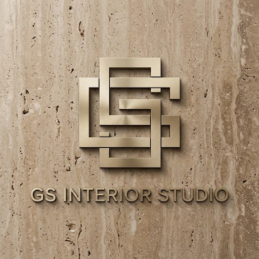
07 / YOUR NEXT CHAPTER
Big plans or just a feeling.
We’d love to hear about it.